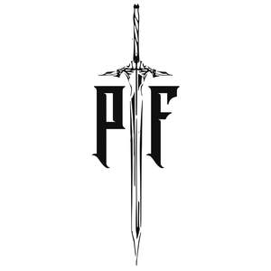

Trade Mark Journal No.2025/010 7 March 2025
UK00004155134 2 February 2025 (21,25,28)

- Class 21
- Water bottles; reusable water bottles; insulated water bottles; sports water bottles; protein shakers; shaker bottles; mixing bottles; supplement storage bottles; meal prep containers; insulated tumblers; flasks; thermal flasks; travel mugs; drinking cups; drinking straws; collapsible bottles; glass water bottles; stainless steel water bottles; plastic water bottles; hydration packs; hydration bladders; fruit infuser bottles; electric protein shakers; handheld misting bottles; squeeze bottles; gallon water bottles.
- Class 25
- Vest; jersey; sports jacket; blazer; shirt; sports jersey; swimming shorts; bikini; leggings; short leggings; sports kit; cycling shorts; cycling jersey; uniform; sports bra; bra; training top; T-Shirt; hoodie; quarter zip; running jacket; zip up hoodie; sweatshirt; sweater; thermal top; thermal bottoms; compression shorts; compression top; running jacket; gilet; raincoat; bomber jacket; parka; Harrington jacket; oversized t-shirt; shorts; joggers; sweatpants; windbreaker; running shorts; underwear; socks; sweatbands; hats; basketball cap; beanie; flat cap; cowboy hat; SnapBack; skull cap; training shoes; head torch; CrossFit shoes, weight lifting shoes; running shoes; gymnastics shoes; flip flops; sliders; sandals; cycling shoes; spikes; hiking shoes; hiking boots; T-shirts; vests; tank tops; hoodies; sweatshirts; joggers; sweatpants; shorts; training shorts; running shorts; leggings; compression tights; base layers; thermals; tracksuits; loungewear; cargo pants; utility pants; jeans; casual trousers; denim jackets; bomber jackets; windbreakers; puffer jackets; raincoats; waterproof jackets; gilets; body warmers; lifting shorts; workout tights; gym tops; gym bottoms; fitness apparel; training apparel; sportswear; activewear; running wear; swimwear; swim shorts; trunks; rash guards; underwear; boxer shorts; briefs; socks; ankle socks; compression socks; performance socks; sleepwear; nightwear; pyjamas; thermal clothing; Training shoes; running shoes; sneakers; casual trainers; gym shoes; lifting shoes; CrossFit shoes; weightlifting shoes; sandals; slides; flip-flops; slippers; boots; Caps; snapbacks; trucker hats; beanies; wool hats; headbands; sweatbands; gloves; workout gloves; lifting gloves; gym gloves; scarves; neck warmers; balaclavas. .
- Class 28
- Dumbbells; barbells; kettlebells; weight plates; weightlifting belts; resistance bands; exercise bands; pull-up bands; loop bands; dip belts; skipping ropes; speed ropes; battle ropes; gymnastic rings; pull-up bars; dip bars; push-up bars; hand grips; grip strengtheners; grip pads; wrist wraps; knee wraps; elbow wraps; lifting straps; lifting hooks; weightlifting gloves; boxing gloves; MMA gloves; shin guards; foam rollers; balance boards; stability balls; Swiss balls; Pilates mats; yoga blocks; yoga straps; ab rollers; ab mats; suspension training straps; agility ladders; cones for agility training; sleds for resistance training; sandbags for training; medicine balls; slam balls; wall balls; exercise bikes; rowing machines; treadmills; elliptical trainers; power racks; squat racks; cable machines; benches for weightlifting; dip stations; plyometric boxes; parallettes; resistance training machines; Smith machines; functional trainers; battle ropes; core sliders.
George Harry Flitney-Rich